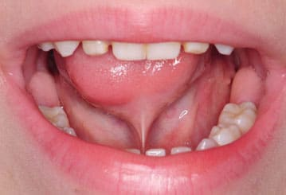
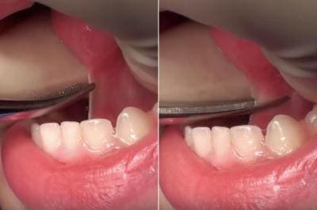

Укорочение уздечки языка (анкилоглоссия) — распространенная проблема у детей. Во время развития плода связка, или уздечка языка, которая связывает основание языка с дном полости рта, медленно смещается к задней части языка. После рождения короткий язык удлиняется по мере роста ребенка, причем уздечка языка растягивается. Иногда эта связка остается прикрепленной к передней части языка. В большинстве случаев короткая уздечка не вызывает проблем и исправляется самостоятельно. Но иногда это может привести к затруднению сосания у детей, кормящихся грудью, и к дальнейшим речевым проблемам.
ПРИЗНАКИ И СИМПТОМЫ
Вот признаки того, что у вашего ребенка может быть анкилоглоссия:
Ригидный язык имеет форму сердца. Обратите внимание на признак, который мы называем «признак сердца». Когда ребенок плачет или широко откроет рот, посмотрите, не прикреплен ли язык к передней части полости рта настолько плотно, что принимает форму сердца, причем серединой фигуры является место соединения с уздечкой языка. Сердцевидная форма является симптомом, о котором вы должны рассказать своему врачу при первом осмотре ребенка, или даже раньше. Затем обратите внимание на эластичность и толщину уздечки языка. Иногда язык выглядит жестким, но уздечка представляет собой тонкую мембрану. В этом случае не стоит беспокоиться, поскольку такая уздечка обычно растягивается и сама выправляется. Но если уздечка такая плотная, что вы не можете вытянуть язык вверх, расположив под ним мизинец, это тревожный признак. Еще в норме кончик языка должен вытягиваться за нижнюю десну, когда ребенок улыбается, смеется или расслаблен. Если язык не вытягивается за нижнюю десну и ребенок не может облизать губы, а на кончике образуется впадинка — возможно, язык слишком жесткий. Также обратите внимание на признак «горбатого языка»: если спинка языка поднимается, в то время как передняя часть языка остается на дне полости рта, это может указывать на то, что уздечка слишком короткая.
Затруднение сосания. Если вы обнаруживаете, что ваш новорожденный не любит захватывать вашу грудь, ваши соски растрескиваются, ваша лактация недостаточна и ваш ребенок плохо набирает вес, это признаки того, что язык ребенка такой тугой, что он не может правильно захватить грудь, чтобы высосать из нее достаточно молока. Еще один признак — во время кормления грудью вы испытываете боль или ребенок кусается. Кроме того, поскольку детям с короткой уздечкой языка приходится прилагать больше усилий во время сосания, они быстрее утомляются и чаще «отпускают» грудь во время кормления. Как правильно отметила Лига Ла Лече: «Язык играет главную роль в грудном вскармливании».
Малышу трудно говорить. Если у вашего 2- или 3-летнего ребенка нарастают нарушения артикуляции и у него сохраняется короткая уздечка языка, ваш врач может направить вас к дефектологу или логопеду, который проанализирует движение языка вашего ребенка во время обычного разговора. Если виновником проблем является короткая уздечка, дальше вас направят к отоларингологу для проведения процедуры подрезания уздечки.
СОВЕТ ДОКТОРОВ СИРС: ЕСЛИ СОМНЕВАЕТЕСЬ, ПОДРЕЖЬТЕ В вопросах обследования и лечения короткой уздечки языка педиатры делятся на две группы: «выжидатели» и «подрезатели». Мы — «подрезатели». Это основано на 35-летней практике, за время которой мы научились оценивать, как часто трудности грудного вскармливания вызваны короткой уздечкой языка и как много детей не «перерастают» эту проблему. Процедура, длящаяся 10 секунд, может дать ребенку годы полезного материнского молока и, возможно, поможет ему легче освоить речь. |
ЧТО МОЖЕТ СДЕЛАТЬ ВРАЧ
Хотя это кажется очень серьезным делом, в действительности это не так. Я (доктор Билл) помню одну мать, потратившую на дорогу пару часов для того, чтобы получить консультацию по поводу короткой уздечки языка. Ее врач поставил правильный диагноз, но хотел отправить ребенка к отоларингологу, который собирался «госпитализировать ребенка», чтобы «подрезать язык»! Эта мудрая мама хотела услышать заключение другого врача. Я осмотрел ребенка и согласился c диагнозом (но не с направлением) педиатра. Я обычно, дождавшись, когда ребенок широко откроет рот или плачет, быстро хватал кончик языка через кусочек марли (иногда, если рот раскрыт достаточно широко, держать язык нет необходимости) и моментально делал «надрез». Эта процедура была безболезненной и бескровной. Я до сих пор помню удивленное восклицание матери: «И это все?» Да, это все, что требовалось. После этой процедуры ребенка сразу же можно покормить грудью для успокоения. Зачастую матери тут же чувствуют, что ребенок начал правильно захватывать грудь. Иногда при подрезании уздечки языка выделяется пара капель крови, но она быстро останавливается и не доставляет ребенку беспокойства. Мы считаем, что неспособность высосать достаточно молока или прикладывание слишком больших усилий для его получения беспокоят ребенка гораздо сильнее, чем подрезание уздечки.

Преимущества раннего подрезания уздечки заключаются в том, что на первом месяце жизни уздечка языка очень тоненькая, напоминает пленочку и не слишком испещрена кровеносными сосудами. Ее легче подрезать, и процедура будет менее болезненной для ребенка. Чем дольше уздечку не подрезают, тем плотнее может стать связка и тем более долгой и сложной будет процедура. Если вы не сделаете ее до того, как ребенку исполнится несколько месяцев или год, уздечка утолщается, в ней развивается больше сосудов, и процедура становится более сложной, для остановки кровотечения потребуется наложение швов или прижигание.
Короткая уздечка языка является, пожалуй, одной из самых недооцененных проблем в раннем младенчестве, лечению которой уделяется слишком мало внимания. Если бы ребенок мог говорить, он, возможно, сказал бы: «Уберите эту штуковину, чтобы я мог правильно сосать и говорить». |
Когда-то бытовало расхожее мнение, что тугие языки надо оставить в покое и они постепенно разойдутся сами по себе. Этот более консервативный подход господствовал в эпоху до грудного вскармливания, поскольку короткая уздечка не доставляет беспокойства детям, кормящимся из бутылочки. Теперь, когда больше женщин кормят грудью, больше врачей должны хорошо разбираться в проблеме анкилоглоссии.
Здоровье ребенка от докторов Сирс / Сирс У. и др.